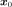
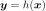
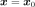
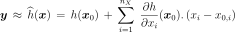
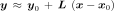
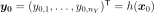
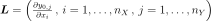
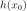

LinearTaylor¶
-
class
LinearTaylor(*args)¶ First order polynomial response surface by Taylor expansion.
- Available constructors:
LinearTaylor(center, function)
- Parameters
- centersequence of float
Point

where the Taylor expansion of the function is performed.
is performed.
- function
Function Function
to be approximated.
Notes
The approximation of the model response

around a specific set of input parameters may be of interest. One may then substitute for its Taylor
expansion at point . Hence is replaced with a first
or second-order polynomial  whose evaluation is inexpensive,
allowing the analyst to apply the uncertainty anaysis methods.
whose evaluation is inexpensive,
allowing the analyst to apply the uncertainty anaysis methods.
We consider here the first order Taylor expansion around

.
Introducing a vector notation, the previous equation rewrites:

where:

is the vector model response evaluated at ; is the current set of input parameters;
is the current set of input parameters;
is the transposed Jacobian matrix evaluated at .
Examples
>>> import openturns as ot >>> formulas = ['x1 * sin(x2)', 'cos(x1 + x2)', '(x2 + 1) * exp(x1 - 2 * x2)'] >>> myFunc = ot.SymbolicFunction(['x1', 'x2'], formulas) >>> myTaylor = ot.LinearTaylor([1, 2], myFunc) >>> myTaylor.run() >>> responseSurface = myTaylor.getMetaModel() >>> print(responseSurface([1.2,1.9])) [1.13277,-1.0041,0.204127]
Methods
getCenter(self)Get the center.
getClassName(self)Accessor to the object’s name.
getConstant(self)Get the constant vector of the approximation.
getId(self)Accessor to the object’s id.
getInputFunction(self)Get the function.
getLinear(self)Get the gradient of the function at .
getMetaModel(self)Get an approximation of the function.
getName(self)Accessor to the object’s name.
getShadowedId(self)Accessor to the object’s shadowed id.
getVisibility(self)Accessor to the object’s visibility state.
hasName(self)Test if the object is named.
hasVisibleName(self)Test if the object has a distinguishable name.
run(self)Perform the Linear Taylor expansion around .
setName(self, name)Accessor to the object’s name.
setShadowedId(self, id)Accessor to the object’s shadowed id.
setVisibility(self, visible)Accessor to the object’s visibility state.
-
__init__(self, *args)¶ Initialize self. See help(type(self)) for accurate signature.
-
getCenter(self)¶ Get the center.
- Returns
- center
Point Point where the Taylor expansion of the function is performed.
- center
-
getClassName(self)¶ Accessor to the object’s name.
- Returns
- class_namestr
The object class name (object.__class__.__name__).
-
getConstant(self)¶ Get the constant vector of the approximation.
- Returns
- constantVector
Point Constant vector of the approximation, equal to

.
- constantVector
-
getId(self)¶ Accessor to the object’s id.
- Returns
- idint
Internal unique identifier.
-
getLinear(self)¶ Get the gradient of the function at .
- Returns
- gradient
Matrix Gradient of the function
at the point (the
transposition of the jacobian matrix).
- gradient
-
getMetaModel(self)¶ Get an approximation of the function.
- Returns
- approximation
Function An approximation of the function
by a Linear Taylor expansion at
the point .
- approximation
-
getName(self)¶ Accessor to the object’s name.
- Returns
- namestr
The name of the object.
-
getShadowedId(self)¶ Accessor to the object’s shadowed id.
- Returns
- idint
Internal unique identifier.
-
getVisibility(self)¶ Accessor to the object’s visibility state.
- Returns
- visiblebool
Visibility flag.
-
hasName(self)¶ Test if the object is named.
- Returns
- hasNamebool
True if the name is not empty.
-
hasVisibleName(self)¶ Test if the object has a distinguishable name.
- Returns
- hasVisibleNamebool
True if the name is not empty and not the default one.
-
run(self)¶ Perform the Linear Taylor expansion around .
-
setName(self, name)¶ Accessor to the object’s name.
- Parameters
- namestr
The name of the object.
-
setShadowedId(self, id)¶ Accessor to the object’s shadowed id.
- Parameters
- idint
Internal unique identifier.
-
setVisibility(self, visible)¶ Accessor to the object’s visibility state.
- Parameters
- visiblebool
Visibility flag.